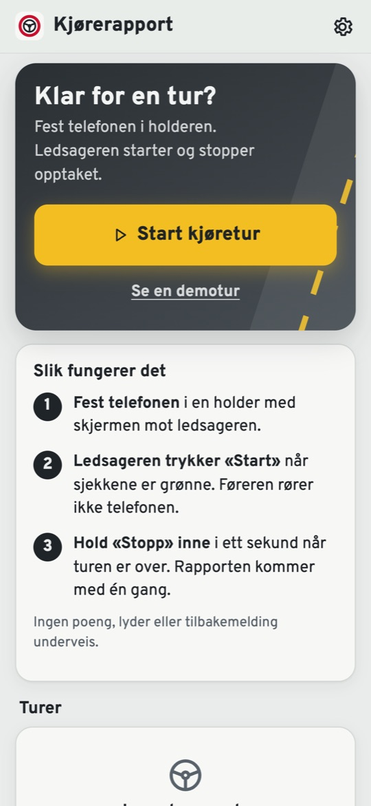

Eleven kommer forberedt til timen.
Kjørerapport gjør elevens telefon til en øvingslogg for øvelseskjøring med ledsager. Etter hver tur får eleven en rapport over bremsing, gass, svinger, fart og fartsgrenser, på kart og med konkrete tips til neste tur.
Gratis å prøve. Ingen konto og ingen server. Turene blir på elevens telefon.


Det trafikkskolen får ut av det
Mesteparten av kjøringen skjer med ledsager, uten at dere ser den. Kjørerapport gjør den synlig.
Tall fra øvelseskjøringen
Eleven viser rapporten på telefonen eller deler den som PDF. Dere ser hvor det bremses brått, hvor svingene går for fort og hvor farten er over grensen.
Opplæringsplanen med bevis
Appen følger hovedtrekkene i læreplanen for klasse B og viser hva som er øvd: minutter i by, på landevei og i mørke, antall rundkjøringer, feltskifter og vikepliktkryss.
Konkrete øvingsmål
Ut fra de siste turene foreslår appen hva neste tur bør handle om, for eksempel «jevn bremsing» eller «mørkekjøring». Etter turen ser eleven om målet ble nådd.
Slik fungerer det i bilen
- 1Telefonen festes i en holder. Appen sjekker at GPS og sensorer virker før start.
- 2Ledsageren trykker «Start». Føreren rører ikke telefonen. Ingen lyder eller varsler underveis.
- 3Rapporten kommer når turen stoppes. Telefonen kan lese opp de viktigste tipsene.
Den fungerer på iPhone og Android, direkte fra nettleseren. Den legges til på Hjem-skjermen og virker uten nett.

Hva rapporten viser
- Poeng for bremsing, akselerasjon, svinger og jevn fart
- Hver hendelse på kartet, med fart og gatenavn
- Fartsgrenser fra Statens vegvesen og tid over grensen
- Rundkjøringer, stoppskilt, vikeplikt og feltskifter
- Utvikling over tid og sammenligning når samme rute kjøres igjen
- Faresteder: steder der det går galt på flere turer
- Kjørelogg med tid i by, på landevei, motorvei og i mørke
- Speil- og skulderblikk med frontkameraet Testes nå
Personvern som er lett å forklare
Det finnes ingen konto og ingen server. Turene lagres bare på elevens telefon, og eleven bestemmer selv hva som deles og med hvem. I kameraversjonen behandles bildet på telefonen og lagres aldri.
Ærlig status
Kjørerapport er en testversjon. Målingene er veiledende og er ikke en offisiell vurdering. Appen erstatter ikke trafikklæreren. Den er laget for å gjøre øvelseskjøringen mellom timene bedre.
Vi ser etter 2–3 trafikkskoler
Vi vil gjerne at noen trafikkskoler prøver appen med et par elever i noen uker og sier rett ut hva som må til for at den blir nyttig. Det koster ingenting. Det vi lurer mest på:
- Ville elevene deres brukt dette mellom timene?
- Vil dere se elevenes rapporter, og i så fall hvordan?
- Hva mangler før dere kunne anbefalt den?

Prøv på telefonen
Skann koden og trykk «Se en demotur». Det tar ett minutt.
Jo@svendsenmedia.net